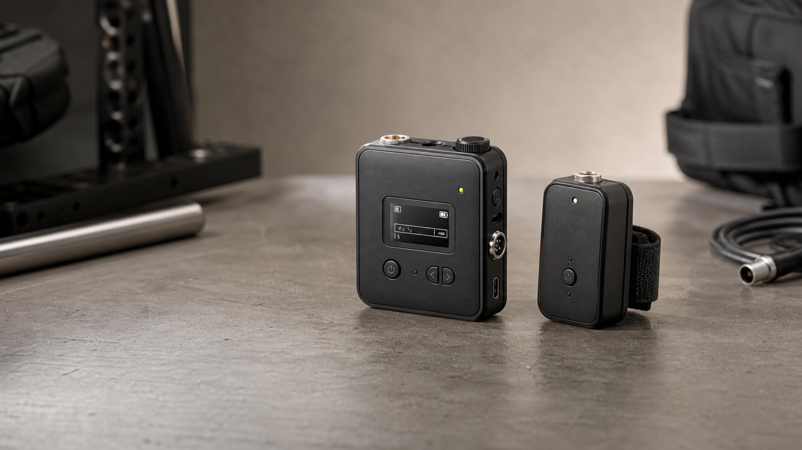

Readable at a glance
OLED and touch-screen receiver builds keep distance, battery, signal, and mode state visible without a laptop in the loop.

Receiver, tag, firmware, app
OLED and touch-screen receiver builds keep distance, battery, signal, and mode state visible without a laptop in the loop.
Small tag modules are designed for quick mounting, wireless ranging, and repeatable testing across camera and subject setups.
The firmware path is planned around named boards, stable channels, and over-the-air releases as the project grows.
On-set friendly
Keep hardware roles simple: receiver, transmitter, mini RX, tag.
Use the display or companion app to watch distance, signal quality, and battery state.
Track board identity, release channels, and future OTA updates from the same project family.
Companion app
The app view keeps the active route, live distance, signal quality, battery state, and board identity in one place while the receiver and tag do the measurement work.
Coming next
This site can grow into the place for release notes, install guides, hardware photos, enclosure updates, and firmware downloads when DigiTape is ready for broader testing.
Get updates